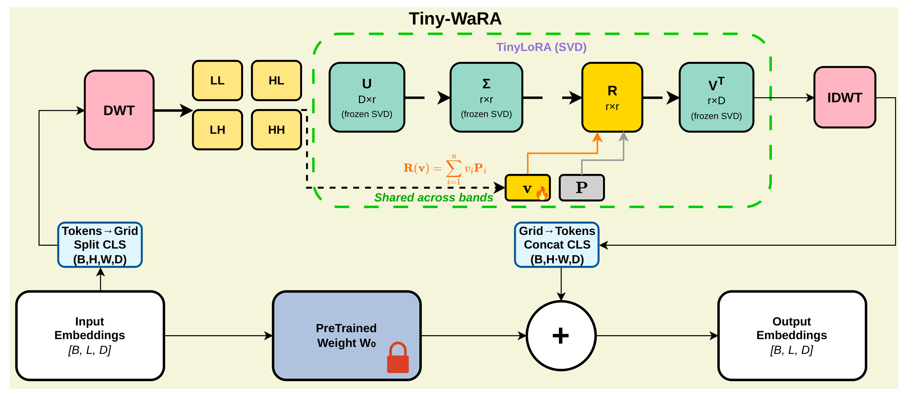
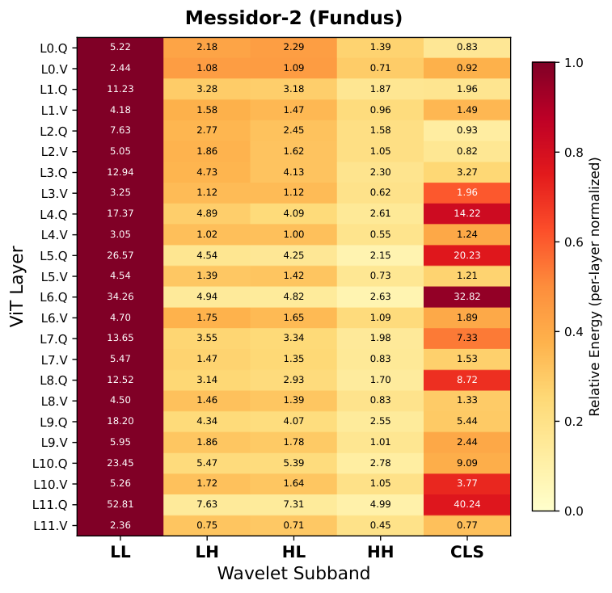
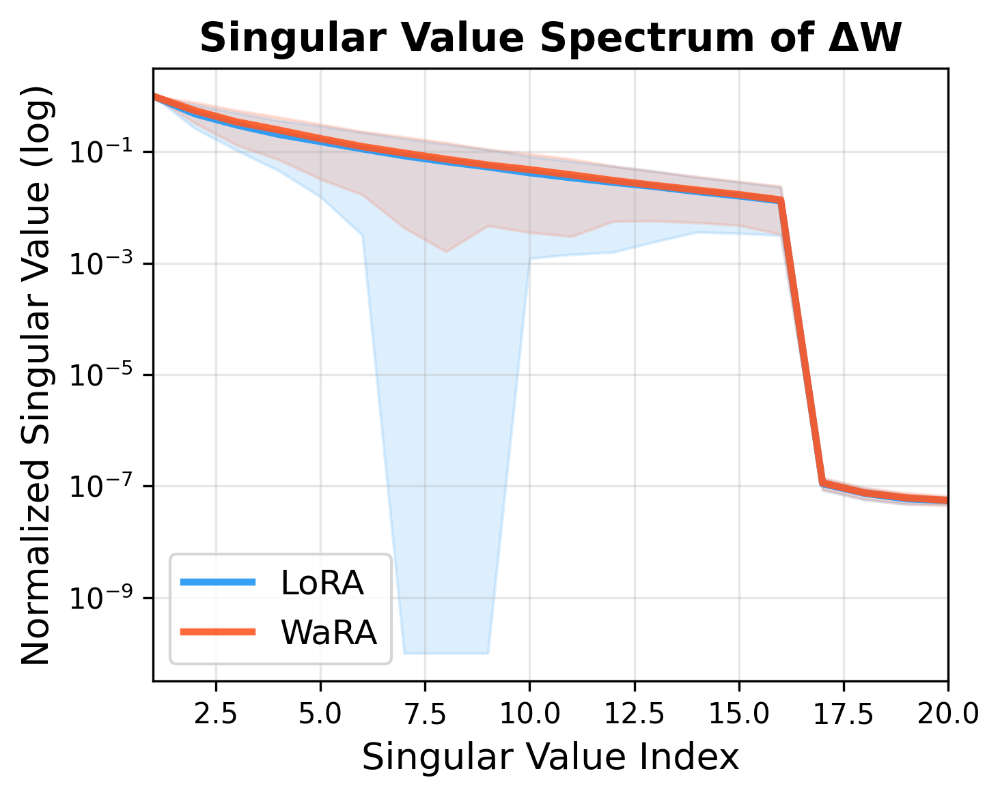

Adapting large pretrained vision models to medical image classification is often limited by memory, computation, and task-specific specializations. Parameter-efficient fine-tuning (PEFT) methods like LoRA reduce this cost by learning low-rank updates, but operating directly in feature space can struggle to capture the localized, multi-scale features common in medical imaging. We propose WaRA, a wavelet-structured adaptation module that performs low-rank adaptation in a wavelet domain. WaRA reshapes patch tokens into a spatial grid, applies a fixed discrete wavelet transform, updates subband coefficients using a shared low-rank adapter, and reconstructs the additive update through an inverse wavelet transform. This design provides a compact trainable interface while biasing the update toward both coarse structure and fine detail. For extremely low-resource settings, we introduce Tiny-WaRA, which further reduces trainable parameters by learning only a small set of coefficients in a fixed basis derived from the pretrained weights through a truncated SVD. Experiments on medical image classification across four modalities and datasets demonstrate that WaRA consistently improves performance over strong PEFT baselines, while retaining a favorable efficiency profile. Our code is publicly available at https://github.com/moeinheidari7829/WaRA.
| Method | Params. | Fundus (Messidor-2) | Dermoscopy (ISIC2018) | Mammography (DDSM) | Chest X-ray (COVID) | Avg. F1 |
| Full fine tuning | 100 | 39.04±5.01 | 67.46±1.17 | 72.19±0.71 | 97.50±0.40 | 69.05±1.82 |
| Linear probing | 0.0045 | 28.40±3.90 | 62.49±1.17 | 61.54±1.70 | 97.56±0.20 | 62.50±1.74 |
| Bias | 0.12 | 34.84±4.39 | 64.78±1.49 | 65.48±0.90 | 97.83±0.23 | 65.73±1.75 |
| Prompt tuning [17] | 0.176 | 30.58±3.88 | 62.94±1.02 | 62.38±2.35 | 97.36±0.26 | 63.31±1.88 |
| Attention tuning [28] | 33.04 | 30.42±8.18 | 63.26±2.23 | 62.88±1.21 | 97.31±0.56 | 63.47±3.05 |
| Adapter [14] | 2.05 | 25.68±9.67 | 67.22±2.12 | 65.97±2.61 | 97.62±0.38 | 64.12±3.69 |
| LoRA (rank=16) [15] | 0.69 | 39.69±3.07 | 71.81±1.10 | 68.22±7.04 | 96.40±0.84 | 69.03±3.01 |
| LoRA (rank=8) | 0.34 | 40.50±4.55 | 70.61±0.92 | 73.96±1.77 | 96.96±0.38 | 70.51±1.90 |
| FourierFT [12] | 0.16 | 18.63±1.03 | 39.90±1.18 | 62.24±1.91 | 92.44±0.95 | 53.30±1.27 |
| LoCA [9] | 0.17 | 31.36±2.44 | 58.11±2.02 | 62.65±1.22 | 95.93±0.38 | 62.01±1.52 |
| FouRA [3] | 0.68 | 37.60±4.63 | 71.30±1.22 | 67.47±4.20 | 97.58±0.42 | 68.49±1.66 |
| WaveFT [2] | 0.17 | 17.99±1.42 | 32.93±3.16 | 44.47±4.81 | 90.32±0.64 | 46.43±2.51 |
| WaRA (rank=8) | 0.34 | 45.35±2.60 | 70.94±0.99 | 74.68±0.94 | 96.81±0.55 | 71.94±1.27 |
| WaRA (rank=16) | 0.69 | 38.73±7.07 | 71.44±1.05 | 70.20±2.61 | 96.64±0.26 | 69.25±2.75 |
| Method | Params. | F1 | ACC | AUC | Recall | Precision | Kappa |
| Full fine tuning | 100 | 69.05±1.82 | 78.12±1.07 | 90.50±0.42 | 67.75±1.80 | 74.12±4.00 | 73.43±1.15 |
| Linear probing | 0.0045 | 62.50±1.74 | 72.61±2.72 | 86.71±0.35 | 62.54±2.02 | 66.77±2.24 | 64.89±2.89 |
| Bias | 0.12 | 65.73±1.75 | 75.78±0.86 | 88.76±0.36 | 64.99±2.05 | 68.99±2.33 | 69.50±2.63 |
| Prompt tuning [17] | 0.176 | 63.31±1.88 | 74.34±1.00 | 86.90±0.28 | 62.45±1.83 | 67.18±2.36 | 66.68±1.67 |
| Attention tuning [28] | 33.04 | 63.47±3.05 | 73.54±1.28 | 86.76±1.08 | 63.23±2.76 | 67.02±4.89 | 66.13±4.02 |
| Adapter [14] | 2.05 | 64.12±3.69 | 75.47±1.74 | 87.38±2.10 | 63.57±3.62 | 67.27±4.58 | 64.35±6.68 |
| LoRA (rank=16) [15] | 0.69 | 69.03±3.01 | 76.91±2.97 | 90.32±1.14 | 68.27±2.87 | 73.72±3.15 | 73.03±3.69 |
| LoRA (rank=8) | 0.34 | 70.51±1.90 | 78.71±1.20 | 91.14±0.46 | 70.17±2.66 | 74.52±2.42 | 75.62±2.47 |
| FourierFT [12] | 0.16 | 53.30±1.27 | 71.69±0.87 | 84.15±1.49 | 53.08±1.00 | 59.72±3.36 | 53.98±2.29 |
| LoCA [9] | 0.17 | 62.01±1.52 | 74.26±0.75 | 87.49±0.26 | 60.98±1.47 | 67.30±1.73 | 64.43±2.10 |
| FouRA [3] | 0.68 | 68.49±1.66 | 77.28±0.98 | 89.73±0.85 | 67.57±1.64 | 72.74±1.76 | 72.39±2.12 |
| WaveFT [2] | 0.17 | 46.43±2.51 | 66.36±2.59 | 80.42±1.04 | 48.04±1.40 | 51.25±3.50 | 44.30±4.75 |
| WaRA (rank=8) | 0.34 | 71.94±1.27 | 79.69±0.90 | 91.62±0.37 | 71.59±1.78 | 75.02±2.27 | 77.01±1.48 |
| WaRA (rank=16) | 0.69 | 69.25±2.75 | 77.22±1.60 | 90.43±0.79 | 69.05±2.60 | 72.83±3.58 | 72.81±3.15 |
| Method | Computing cost | Fundus (Messidor-2) | Dermoscopy (ISIC2018) | Mammography (DDSM) | Chest X-ray (COVID) | Performance (Avg.) | ||
| Params. | AUC | ACC | F1 | |||||
| FourierFT [12] | 0.010 | 53.18 | 61.97 | 60.36 | 63.17 | 59.67 | 46.24 | 24.90 |
| LoCA [9] | 0.010 | 79.65 | 92.25 | 79.16 | 99.04 | 87.53 | 74.22 | 62.30 |
| FouRA [3] | 0.008 | 78.82 | 93.41 | 80.73 | 99.01 | 87.99 | 75.11 | 65.04 |
| Tiny-WaRA (Ours) | 0.0078 | 81.05 | 93.48 | 81.47 | 99.22 | 88.81 | 78.54 | 69.43 |


| Method | Messidor-2 | ISIC2018 | DDSM | COVID |
| WaRA (shared adapter across bands) | 83.85 | 95.29 | 87.73 | 99.61 |
| WaRA (band-specific adapters) | 83.35 | 94.21 | 85.84 | 99.68 |
@article{heidari2025wara,
title = {WaRA: Wavelet Low-Rank Adaptation for Medical Image Classification},
author = {Heidari, Moein and Huang, Yijin and Medghalchi, Yasamin and Rafiei, Alireza and Tam, Roger and Hacihaliloglu, Ilker},
journal = {arXiv preprint arXiv:2506.24092},
year = {2025}
}